Giới thiệu
khoa học dữ liệu
Học kỳ I, năm học 2026–2027
Trường Đại học Công nghệ, ĐHQGHN
Bài 3
Toán học trong
khoa học dữ liệu
Phần 1: bản đồ tám nhánh toán, xác suất và thống kê,
đại số tuyến tính, giải tích, tối ưu hóa.
Tổng quan buổi học
- Bản đồ toán học trong khoa học dữ liệu: tám nhánh và bảy câu hỏi mở đầu
- Xác suất và thống kê: Bayes, Naive Bayes, kiểm định giả thuyết, A/B testing
- Đại số tuyến tính: vector, ma trận, PCA, độ tương đồng cosine
- Giải tích: đạo hàm, gradient, tích phân
- Tối ưu hóa: quy hoạch tuyến tính, Gradient Descent
- Mỗi nhánh gồm vấn đề thực tế, lịch sử, nhân vật, công thức và mã Python chạy được
Phần 2 (bài 4): toán rời rạc và đồ thị, lý thuyết thông tin, toán học tính toán, hình học và tô pô, lộ trình thực hành.
1.
Bản đồ toán học
trong khoa học dữ liệu
Mathematics behind Data Science: từ lịch sử toán học đến ứng dụng thực tế, công thức và lập trình.
Mục tiêu của bài
Giúp người mới vào ngành hiểu một điều quan trọng:
- Không bắt đầu bằng định nghĩa toán học trừu tượng.
- Bắt đầu từ những câu hỏi quen thuộc. Mỗi câu hỏi dẫn tới một hoặc nhiều nhánh toán.
Khung tham chiếu về nền toán cho học máy: Deisenroth, Faisal & Ong, Mathematics for Machine Learning, Cambridge University Press, 2020.
Bảy câu hỏi mở đầu
Ghép câu hỏi với nhánh toán chỉ mang tính gợi ý. Một câu hỏi thường cần nhiều nhánh cùng lúc.
Tám nhánh toán học
Bài 3: nhánh 1–4. Bài 4: nhánh 5–8.
Đây là cách phân loại theo vai trò của toán học trong một hệ thống khoa học dữ liệu, không phải phân loại chính thức duy nhất của ngành. Sơ đồ do biên soạn.
Các nhánh không hoạt động độc lập
Ví dụ huấn luyện một mạng neural network, đồng thời dùng:
Cách tiếp cận từng nhánh
Toàn bộ mã trong hai bài đã được chạy lại bằng Python 3.12, NumPy, SciPy, scikit-learn, NetworkX và GUDHI. Số trong phần “Kết quả chạy” là số máy in ra.
2.
Xác suất
và thống kê
Probability Theory & Statistics
Vì sao cần xác suất và thống kê?
Một cửa hàng có 10.000 khách hàng. Cần trả lời:
- Khách hàng nào có khả năng mua hàng?
- Tỷ lệ khách hàng quay lại mua hàng là bao nhiêu?
- Doanh thu tháng sau có thể tăng hay giảm?
- Một chiến dịch quảng cáo làm doanh thu tăng 10%: hiệu quả thật, hay chỉ là ngẫu nhiên?
- Khảo sát 100 người thì kết luận được gì về 10.000 khách hàng?
Phân biệt xác suất và thống kê
| Xác suất (Probability) | Thống kê (Statistics) |
|---|---|
| Biết quy luật, tính khả năng xảy ra | Có dữ liệu, suy luận về quy luật |
| Từ mô hình đến dữ liệu | Từ dữ liệu đến mô hình |
| Ví dụ: xác suất tung đồng xu ra mặt ngửa | Ví dụ: đồng xu có thực sự cân bằng không? |
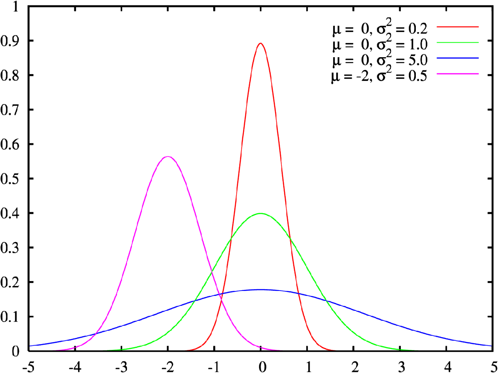
Dòng thời gian xác suất và thống kê
Các mốc là cột mốc tiêu biểu, không phải lịch sử đầy đủ của ngành.
Nguồn tổng quan: Stephen Stigler, The History of Statistics, Harvard University Press, 1986 · International Statistical Institute.
Thế kỷ XVII: sự ra đời của xác suất
| Mốc | Sự kiện | Ý nghĩa |
|---|---|---|
| 1654 | Blaise Pascal và Pierre de Fermat trao đổi thư từ về bài toán chia tiền cược khi trò chơi bị gián đoạn | Một trong những cột mốc quan trọng của xác suất hiện đại: lập luận có hệ thống về bất định |
Nguồn: MacTutor — Pascal · MacTutor — Fermat.
Luật số lớn của Bernoulli
Phạm vi công cộng, Wikimedia Commons
Phạm vi công cộng, Wikimedia Commons
Jakob Bernoulli công bố Ars Conjectandi. Công trình đặt nền tảng cho luật số lớn: khi số lần thử đủ lớn, tần suất quan sát có xu hướng tiến gần xác suất lý thuyết.
\(S_n\): số lần xảy ra biến cố sau \(n\) lần thử độc lập. \(p\): xác suất lý thuyết của biến cố.
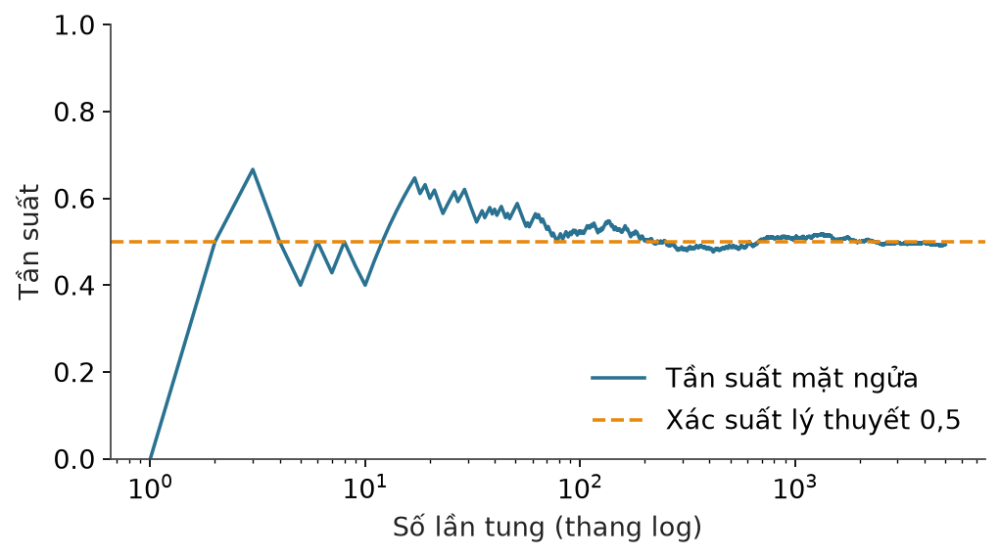
Nguồn: MacTutor — Jakob Bernoulli. Ngày xuất bản 1713, sau khi tác giả qua đời.
Định lý Bayes ra đời

Phạm vi công cộng, Wikimedia Commons
Công trình của Thomas Bayes được Richard Price công bố sau khi Bayes qua đời. Đây là nền móng của thống kê Bayes.
Nguồn: Bayes, An Essay towards solving a Problem in the Doctrine of Chances, Philosophical Transactions, 1763. Không có chân dung nào được xác thực là Bayes.
Bình phương tối thiểu và xác suất giải tích
Phạm vi công cộng, Wikimedia Commons
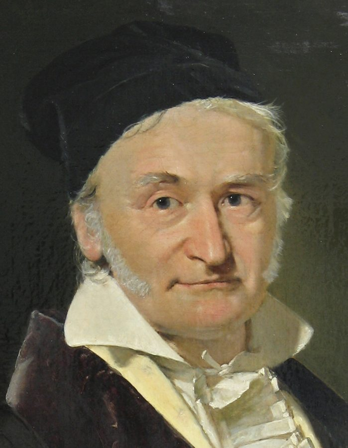
Phạm vi công cộng, Wikimedia Commons
| Mốc | Sự kiện | Ý nghĩa |
|---|---|---|
| 1805 | Legendre công bố phương pháp bình phương tối thiểu | Chọn tham số làm tổng bình phương sai số nhỏ nhất |
| 1809 | Gauss công bố công trình liên quan | Gắn bình phương tối thiểu với phân phối sai số |
| 1812 | Laplace phát triển lý thuyết xác suất trong Théorie analytique des probabilités | Xác suất trở thành một ngành giải tích |
Nguồn: MacTutor — Legendre · MacTutor — Gauss · MacTutor — Laplace.
Thống kê hiện đại
Phạm vi công cộng, Wikimedia Commons
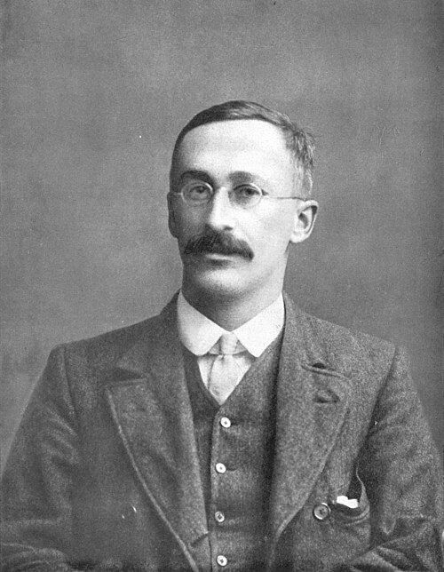
Phạm vi công cộng, Wikimedia Commons
Phạm vi công cộng, Wikimedia Commons
| Nhà khoa học | Đóng góp |
|---|---|
| Francis Galton | Phát triển các khái niệm tương quan và hồi quy |
| Karl Pearson | Phát triển kiểm định Chi-square (1900) |
| William Gosset | Giới thiệu phân phối t (1908), xuất bản dưới bút danh “Student” |
| Ronald Fisher | Phát triển mạnh suy luận thống kê, likelihood và ANOVA |
Nguồn: MacTutor — Galton · Pearson, 1900 · Student, 1908, Biometrika · Fisher, The Design of Experiments, 1935.
Nền tảng tiên đề của xác suất
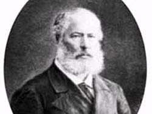
Phạm vi công cộng, Wikimedia Commons
Andrey Kolmogorov đưa ra hệ tiên đề hiện đại cho xác suất, tạo nền tảng toán học chặt chẽ cho lý thuyết xác suất.
Với các biến cố \(A_i\) đôi một xung khắc. \(\Omega\): không gian mẫu. Ba tiên đề: không âm, chuẩn hóa, cộng tính đếm được.
Nguồn: MacTutor — Kolmogorov · Kolmogorov, Grundbegriffe der Wahrscheinlichkeitsrechnung, 1933.
Thống kê tính toán và Machine Learning
Phạm vi công cộng, Wikimedia Commons
Bootstrap, MCMC, mô hình Bayes phân cấp, thống kê phi tham số và học máy đã mở rộng đáng kể khả năng phân tích dữ liệu.
- Bootstrap — Efron, 1979: ước lượng độ bất định bằng cách lấy mẫu lại.
- MCMC — Metropolis và cộng sự, 1953; Hastings, 1970; Gelfand và Smith, 1990: lấy mẫu từ phân phối khó tính trực tiếp.
Nguồn: Efron, 1979, Annals of Statistics · Metropolis et al., 1953 · Hastings, 1970 · Gelfand & Smith, 1990.
Những nhà khoa học tiêu biểu
Phạm vi công cộng, Wikimedia Commons
Phạm vi công cộng, Wikimedia Commons
Phạm vi công cộng, Wikimedia Commons
Nguồn: Science Museum — Florence Nightingale · MacTutor — Fisher · MacTutor — Gauss.
Tổ chức và cộng đồng nổi bật
| Tổ chức | Vai trò | Thành lập |
|---|---|---|
| International Statistical Institute (ISI) | Cộng đồng thống kê quốc tế | 1885 |
| American Statistical Association (ASA) | Tổ chức nghề nghiệp và học thuật về thống kê | 1839 |
| Royal Statistical Society (RSS) | Một trong những hội thống kê lâu đời nhất | 1834 |
Năm thành lập theo thông tin giới thiệu của từng tổ chức (trang chủ): ISI · ASA · RSS.
Ứng dụng 1. Khách hàng có mua hay không?
Giả sử có 100 khách hàng: 20 người mua hàng, 80 người không mua.
Chọn ngẫu nhiên một người, xác suất người đó mua hàng là:
Tức 20%.
Định lý Bayes
| \(A\) | Khách hàng thực sự mua hàng |
| \(B\) | Khách hàng thêm sản phẩm vào giỏ |
| \(P(A)\) | Xác suất mua hàng ban đầu |
| \(P(B\mid A)\) | Xác suất người mua đã thêm vào giỏ |
| \(P(B)\) | Xác suất một khách bất kỳ thêm vào giỏ |
| \(P(A\mid B)\) | Xác suất mua hàng khi biết khách đã thêm vào giỏ |
Nguồn: Wasserman, All of Statistics, Springer, 2004, chương 1 · Bayes, 1763.
Tính ví dụ bằng Bayes
- 20% khách hàng mua hàng: \(P(A)=0{,}2\).
- 80% người mua hàng đã thêm vào giỏ: \(P(B\mid A)=0{,}8\).
- 30% toàn bộ khách hàng đã thêm vào giỏ: \(P(B)=0{,}3\).
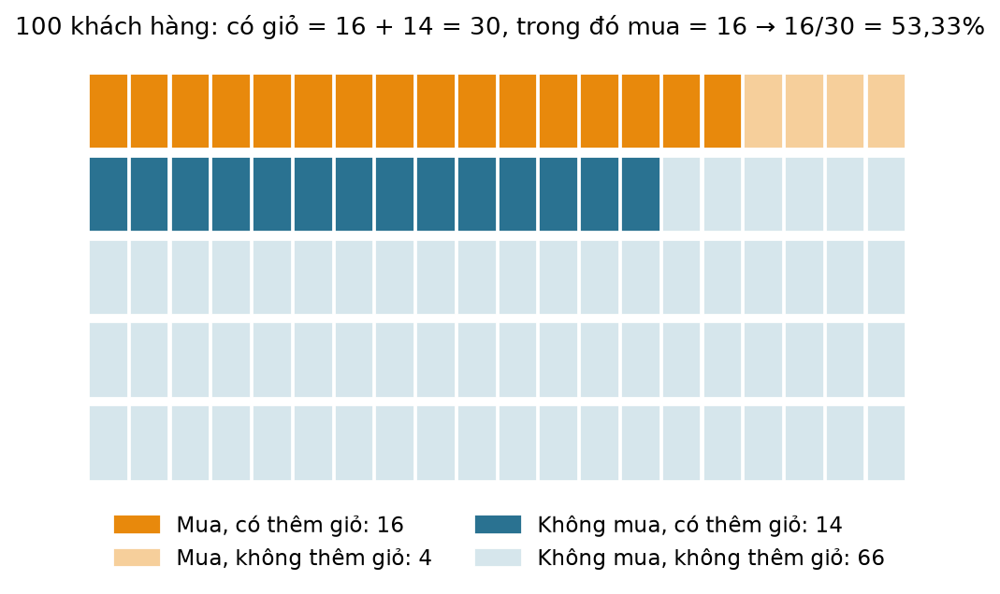
Mã Python: suy luận Bayes
# Bayesian inference: dự đoán khả năng mua hàng
p_buy = 0.20
p_cart_given_buy = 0.80
p_cart = 0.30
p_buy_given_cart = (
p_cart_given_buy * p_buy / p_cart
)
print(f"P(Mua | Thêm giỏ) = {p_buy_given_cart:.2%}")
P(Mua | Thêm giỏ) = 53.33%
Ứng dụng 2. Naive Bayes: dữ liệu
Ứng dụng 1 chỉ dùng một dấu hiệu (thêm vào giỏ). Thực tế có nhiều dấu hiệu cùng lúc. Dữ liệu mô phỏng 10 khách hàng:
| No. | Age | Student | Income | Credit | Buys |
|---|---|---|---|---|---|
| 1 | Young | Yes | High | Fair | No |
| 2 | Senior | No | High | Excellent | Yes |
| 3 | Middle | Yes | Medium | Fair | Yes |
| 4 | Young | Yes | Low | Fair | No |
| 5 | Middle | Yes | Low | Excellent | Yes |
| 6 | Senior | No | Medium | Excellent | No |
| 7 | Young | No | Medium | Excellent | Yes |
| 8 | Young | Yes | Medium | Fair | Yes |
| 9 | Middle | Yes | High | Excellent | Yes |
| 10 | Senior | No | Low | Fair | No |
Dữ liệu mô phỏng, dùng cho mục đích minh họa. Nhãn cần dự đoán là cột Buys (khách hàng có mua hay không).
Naive Bayes: công thức
Mở rộng định lý Bayes cho nhiều đặc trưng \(x_1,\dots,x_n\) và lớp \(C\):
Giả định “ngây thơ” (naive): các đặc trưng độc lập có điều kiện khi biết lớp:
| \(P(C)\) | Xác suất tiên nghiệm của lớp: tỉ lệ người mua (hoặc không mua) trong dữ liệu |
| \(P(x_i\mid C)\) | Tỉ lệ khách có giá trị \(x_i\) trong nhóm lớp \(C\) |
| \(\propto\) | Tỉ lệ thuận: mẫu số \(P(x_1,\dots,x_n)\) như nhau cho mọi lớp nên chỉ cần so sánh tử số |
Làm trơn Laplace khi một tổ hợp chưa từng xuất hiện (tránh xác suất 0): \(P(x_i\mid C)=\dfrac{N_{x_i,C}+\alpha}{N_C+\alpha k}\), với \(k\) là số giá trị khả dĩ của đặc trưng.
Nguồn: scikit-learn — Naive Bayes · Manning, Raghavan & Schütze, Introduction to Information Retrieval, chương 13.
Naive Bayes: tính tay
| Thành phần | Buys = Yes (6 người) | Buys = No (4 người) |
|---|---|---|
| \(P(C)\) | 6/10 = 0,6 | 4/10 = 0,4 |
| \(P(\text{Young}\mid C)\) | 2/6 | 2/4 |
| \(P(\text{Student}=\text{Yes}\mid C)\) | 4/6 | 2/4 |
| \(P(\text{Medium}\mid C)\) | 3/6 | 1/4 |
| \(P(\text{Fair}\mid C)\) | 2/6 | 3/4 |
| Điểm \(P(C)\prod P(x_i\mid C)\) | 0,6 × 48/1296 ≈ 0,02222 | 0,4 × 12/256 ≈ 0,01875 |
Mã Python: Naive Bayes tự cài đặt
Cần thêm thư viện: pip install pandas scikit-learn.
import pandas as pd
# Dữ liệu mô phỏng: 10 khách hàng
df = pd.DataFrame({
"Age": ["Young", "Senior", "Middle", "Young", "Middle",
"Senior", "Young", "Young", "Middle", "Senior"],
"Student": ["Yes", "No", "Yes", "Yes", "Yes",
"No", "No", "Yes", "Yes", "No"],
"Income": ["High", "High", "Medium", "Low", "Low",
"Medium", "Medium", "Medium", "High", "Low"],
"Credit": ["Fair", "Excellent", "Fair", "Fair", "Excellent",
"Excellent", "Excellent", "Fair", "Excellent", "Fair"],
"Buys": ["No", "Yes", "Yes", "No", "Yes",
"No", "Yes", "Yes", "Yes", "No"],
})
# Khách hàng mới cần dự đoán
new = {"Age": "Young", "Student": "Yes",
"Income": "Medium", "Credit": "Fair"}
# Naive Bayes tự cài đặt: P(C) * tích các P(x_i | C)
score = {}
for label, g in df.groupby("Buys"):
s = len(g) / len(df) # P(C)
for col, val in new.items():
s *= (g[col] == val).mean() # P(x_i | C)
score[label] = s
total = sum(score.values())
for label, s in score.items():
print(f"{label}: điểm = {s:.5f}, xác suất = {s / total:.2%}")
No: điểm = 0.01875, xác suất = 45.76% Yes: điểm = 0.02222, xác suất = 54.24%
Nguồn: pandas — DataFrame.groupby.
Mã Python: đối chiếu với scikit-learn
# Đối chiếu với scikit-learn
from sklearn.naive_bayes import CategoricalNB
from sklearn.preprocessing import OrdinalEncoder
features = ["Age", "Student", "Income", "Credit"]
enc = OrdinalEncoder()
X = enc.fit_transform(df[features])
x_new = enc.transform(pd.DataFrame([new])[features])
for alpha in (1e-10, 1.0):
model = CategoricalNB(alpha=alpha).fit(X, df["Buys"])
proba = model.predict_proba(x_new)[0]
# model.classes_ = ['No', 'Yes']
print(f"alpha={alpha:g}: P(No)={proba[0]:.4f}, "
f"P(Yes)={proba[1]:.4f} -> {model.predict(x_new)[0]}")
alpha=1e-10: P(No)=0.4576, P(Yes)=0.5424 -> Yes alpha=1: P(No)=0.4394, P(Yes)=0.5606 -> Yes
CategoricalNB cho đúng 0,4576 và 0,5424 như tay. Với \(\alpha=1\) (mặc định, làm trơn Laplace) kết quả là 0,4394 và 0,5606: xác suất đổi nhẹ nhưng dự đoán vẫn là Yes.Nguồn: scikit-learn — CategoricalNB · OrdinalEncoder.
Naive Bayes: ưu điểm và giới hạn
- Huấn luyện chỉ là đếm tần suất, rất nhanh.
- Hoạt động tốt với ít dữ liệu và nhiều đặc trưng.
- Cho xác suất, dễ giải thích từng đóng góp \(P(x_i\mid C)\).
- Giả định độc lập hiếm khi đúng: tuổi và thu nhập thường tương quan.
- Xác suất đầu ra thường kém hiệu chuẩn, dùng để xếp hạng tốt hơn để đọc tuyệt đối.
- Cần làm trơn khi có tổ hợp chưa từng thấy.
Trong khi tích nhiều xác suất nhỏ, mã thực tế thường cộng logarit xác suất để tránh tràn số dưới: \(\log P(C)+\sum_i\log P(x_i\mid C)\).
Ứng dụng 3. Quảng cáo có thực sự hiệu quả?
Trước quảng cáo, tỷ lệ chuyển đổi là 5%. Sau quảng cáo, tỷ lệ này là 6%.
Sự khác biệt là thật, hay chỉ là ngẫu nhiên? Đây là bài toán Statistical Hypothesis Testing và A/B Testing.
| \(H_0\) | Giả thuyết không: quảng cáo không tạo ra sự khác biệt |
| \(H_1\) | Giả thuyết đối: quảng cáo tạo ra sự khác biệt |
Nguồn: Kohavi, Tang & Xu, Trustworthy Online Controlled Experiments, Cambridge University Press, 2020.
Thống kê kiểm định z cho hai tỷ lệ
Với hai tỷ lệ độc lập, thống kê kiểm định:
| \(\hat p_A,\hat p_B\) | Tỷ lệ chuyển đổi quan sát của nhóm A và nhóm B |
| \(n_A,n_B\) | Cỡ mẫu của hai nhóm |
| \(\hat p\) | Tỷ lệ chuyển đổi gộp của hai nhóm: \(\hat p=\dfrac{x_A+x_B}{n_A+n_B}\) |
| p-value | \(2\,\Pr(Z\ge |z|)\) với \(Z\sim N(0,1)\). Nhỏ hơn 0,05 thì có bằng chứng về sự khác biệt |
Nguồn: SciPy — scipy.stats.norm · Wasserman, All of Statistics, chương 10.
Mã Python: kiểm định, phần 1 — dữ liệu và sai số chuẩn
Nhóm A: 500 người, 25 người mua. Nhóm B: 500 người, 30 người mua.
from scipy.stats import norm
import numpy as np
# Nhóm A: 500 người, 25 người mua
# Nhóm B: 500 người, 30 người mua
n_a, x_a = 500, 25
n_b, x_b = 500, 30
p_a = x_a / n_a
p_b = x_b / n_b
p_pool = (x_a + x_b) / (n_a + n_b)
se = np.sqrt(
p_pool * (1 - p_pool) *
(1 / n_a + 1 / n_b)
)
Phần 2 tính z, p-value và đưa ra kết luận.
Mã Python: kiểm định, phần 2 — kết quả
z = (p_b - p_a) / se
p_value = 2 * norm.sf(abs(z))
print("Conversion A:", p_a)
print("Conversion B:", p_b)
print("Z-score:", z)
print("P-value:", p_value)
if p_value < 0.05:
print("Có bằng chứng về sự khác biệt.")
else:
print("Chưa đủ bằng chứng về sự khác biệt.")
Conversion A: 0.05 Conversion B: 0.06 Z-score: 0.6935419821470654 P-value: 0.4879694890245849 Chưa đủ bằng chứng về sự khác biệt.
Đọc kết quả A/B testing
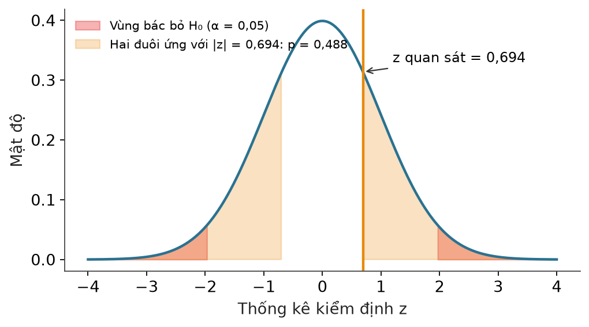
5% lên 6% chưa đủ bằng chứng ở cỡ mẫu 500 mỗi nhóm.
- Không đủ bằng chứng thống kê không đồng nghĩa hai chiến dịch chắc chắn giống nhau.
- Cần xem cỡ mẫu, cách phân nhóm và ảnh hưởng thực tế của mức tăng.
Liên hệ ngành: xác suất và thống kê
Bài tập: đổi số trong ví dụ A/B (ví dụ 5.000 người mỗi nhóm, cùng tỷ lệ 5% và 6%) và quan sát p-value thay đổi thế nào.
3.
Đại số
tuyến tính
Linear Algebra
Một khách hàng là một vector
Một cửa hàng có thông tin về một khách hàng: tuổi 25; thu nhập 15 triệu đồng; số lần mua hàng 8; số tiền trung bình mỗi lần mua 500.000 đồng (viết là 500 nghìn đồng).
| \(x_1\) | Tuổi (năm) |
| \(x_2\) | Thu nhập (triệu đồng) |
| \(x_3\) | Số lần mua hàng |
| \(x_4\) | Số tiền trung bình mỗi lần mua (nghìn đồng) |
Một triệu khách hàng là một ma trận
Mỗi hàng là một khách hàng, mỗi cột là một đặc trưng. Với một triệu khách hàng và bốn đặc trưng, \(X\) có kích thước \(10^6\times 4\).
Nguồn: NumPy — ndarray · Deisenroth, Faisal & Ong, Mathematics for Machine Learning, chương 2.
Đại số tuyến tính trả lời những gì?
- Làm thế nào biểu diễn hàng triệu đối tượng?
- Làm thế nào tính độ tương đồng giữa hai khách hàng?
- Làm thế nào giảm hàng nghìn đặc trưng xuống còn vài chiều?
- Làm thế nào máy tính thực hiện phép biến đổi ảnh?
- Làm thế nào tính toán các lớp trong mạng neural network?
Dòng thời gian đại số tuyến tính
Nguồn tổng quan: MacTutor — Matrices and determinants · SIAM — A Journey through the History of Numerical Linear Algebra.
Giải hệ phương trình tuyến tính
Cửu chương toán thuật của Trung Quốc cổ đại chứa các phương pháp giải hệ phương trình tương tự khử Gauss ngày nay.
Nguồn: MacTutor — The Nine Chapters on the Mathematical Art.
Lý thuyết định thức và ma trận
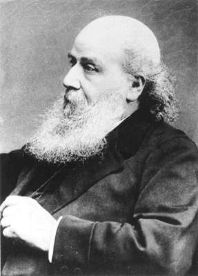
Phạm vi công cộng, Wikimedia Commons

Phạm vi công cộng, Wikimedia Commons
| Mốc | Sự kiện | Ý nghĩa |
|---|---|---|
| Khoảng 1850 | James Joseph Sylvester sử dụng thuật ngữ matrix | Đưa thuật ngữ ma trận vào toán học hiện đại |
| 1858 | Arthur Cayley phát triển lý thuyết ma trận và công bố công trình quan trọng | Ma trận trở thành đối tượng đại số có phép toán riêng |
Nguồn: MacTutor — Sylvester · Cayley, A Memoir on the Theory of Matrices, 1858.
Eigenvalue và biến đổi tuyến tính
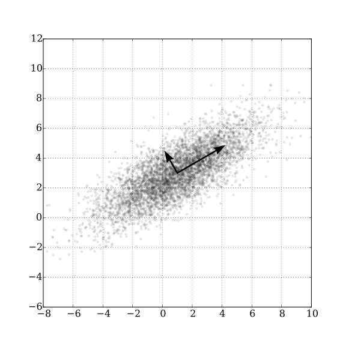
Các nhà toán học phát triển lý thuyết giá trị riêng, vector riêng, phép biến đổi tuyến tính và cấu trúc đại số ma trận.
Phép biến đổi \(A\) chỉ co giãn vector riêng \(\mathbf{v}\) theo hệ số \(\lambda\), không đổi hướng. Ở hình, các vector riêng chỉ đúng hai hướng biến thiên chính của dữ liệu.
Đại số tuyến tính số

LANL, Attribution, Wikimedia Commons
Sự xuất hiện của máy tính điện tử thúc đẩy các thuật toán giải hệ phương trình, phân tích ma trận và tính toán số.
Nguồn: Computer History Museum — ENIAC · SIAM — History of Numerical Linear Algebra.
Machine Learning và Deep Learning
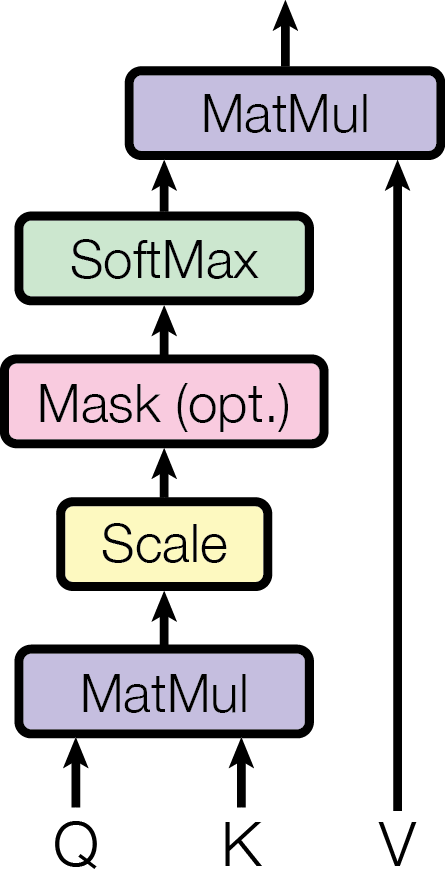
Đại số tuyến tính trở thành nền tảng của PCA, SVD, embeddings, tensor computation, attention và mạng neural network.
Toàn bộ là nhân ma trận. \(Q,K,V\): ba ma trận suy ra từ đầu vào. \(d_k\): số chiều của khóa.
Các nhà khoa học tiêu biểu
Phạm vi công cộng, Wikimedia Commons
Phạm vi công cộng, Wikimedia Commons
ETH Zürich, CC BY-SA 3.0, Wikimedia Commons
LANL, Attribution, Wikimedia Commons
Nguồn: MacTutor — Cayley · MacTutor — Weyl · MacTutor — von Neumann.
Ứng dụng 1. PCA: giảm chiều dữ liệu
Một khách hàng được mô tả bởi 100 đặc trưng. Xử lý 100 đặc trưng tốn tài nguyên và khiến việc trực quan hóa khó khăn.
PCA (Principal Component Analysis) tìm các hướng biến thiên quan trọng nhất của dữ liệu để biểu diễn dữ liệu bằng ít chiều hơn.
Nguồn: Pearson, 1901 · Hotelling, 1933 · scikit-learn — PCA.
PCA: toán học phía sau
Trừ giá trị trung bình để đưa dữ liệu về quanh gốc tọa độ:
Tính ma trận hiệp phương sai:
Tìm vector riêng:
| \(C\) | Ma trận mô tả mức độ biến thiên và tương quan giữa các đặc trưng |
| \(\mathbf{v}\) | Hướng mới mà dữ liệu được chiếu lên |
| \(\lambda\) | Lượng biến thiên theo hướng đó |
Giữ lại những vector riêng có giá trị riêng lớn nhất.
Mã Python: PCA trên bộ iris
import numpy as np
from sklearn.datasets import load_iris
from sklearn.decomposition import PCA
data = load_iris()
X = data.data
pca = PCA(n_components=2)
X_reduced = pca.fit_transform(X)
print("Kích thước ban đầu:", X.shape)
print("Sau PCA:", X_reduced.shape)
print("Tỷ lệ phương sai giữ lại:",
pca.explained_variance_ratio_)
Kích thước ban đầu: (150, 4) Sau PCA: (150, 2) Tỷ lệ phương sai giữ lại: [0.92461872 0.05306648]
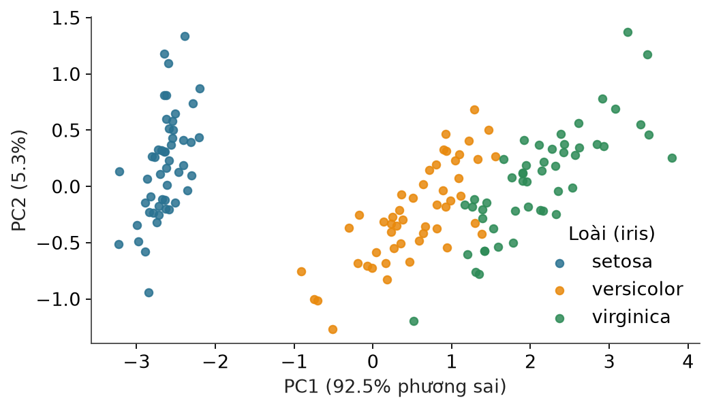
Ứng dụng 2. Tìm sản phẩm tương tự bằng vector
Mỗi sản phẩm được AI chuyển thành một vector đặc trưng:
Đo độ tương đồng bằng Cosine Similarity:
| \(A\cdot B\) | Tích vô hướng của hai vector |
| \(\lVert A\rVert\) | Độ dài vector \(A\) |
Ý nghĩa của cosine
- Góc càng nhỏ thì hai vector càng cùng hướng.
- Giá trị gần 1: rất tương đồng.
- Giá trị gần 0: ít tương đồng.
- Giá trị gần −1: ngược hướng.
Nên \(\operatorname{sim}(A,B)=28/28=1\): \(B=2A\), cùng hướng dù \(B\) dài gấp đôi. Cosine so sánh hướng, không so sánh độ lớn.
\(A\cdot C=1-2+0=-1\), \(\lVert A\rVert\lVert C\rVert=\sqrt{14}\sqrt{2}\approx5{,}29\). Vậy \(\operatorname{sim}(A,C)\approx-0{,}189\): hai vector gần vuông góc, hơi lệch về phía ngược hướng.
Mã Python: cosine similarity
import numpy as np
from sklearn.metrics.pairwise import cosine_similarity
products = np.array([
[1, 2, 3],
[2, 4, 6],
[1, -1, 0],
[1, 2, 2]
])
similarity = cosine_similarity(products)
print(np.round(similarity, 3))
# Tìm sản phẩm giống sản phẩm đầu tiên nhất
scores = similarity[0].copy()
scores[0] = -1
best = np.argmax(scores)
print("Sản phẩm tương tự nhất:", best)
print("Độ tương đồng:", scores[best])
[[ 1. 1. -0.189 0.98 ] [ 1. 1. -0.189 0.98 ] [-0.189 -0.189 1. -0.236] [ 0.98 0.98 -0.236 1. ]] Sản phẩm tương tự nhất: 1 Độ tương đồng: 1.0
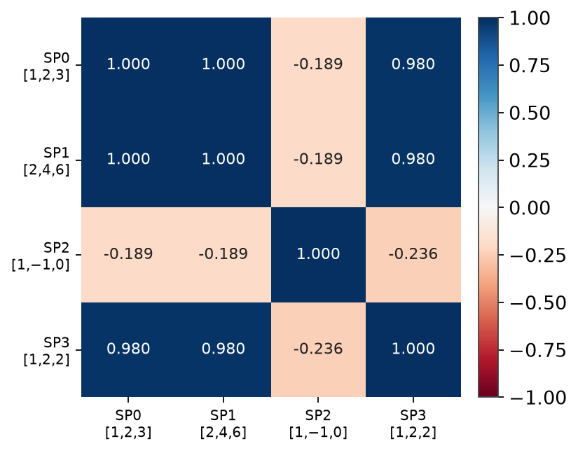
Liên hệ ngành: đại số tuyến tính
4.
Giải tích
Calculus: vi phân và tích phân
Vì sao cần giải tích?
Huấn luyện một AI dự đoán giá nhà. AI dự đoán 2 tỷ đồng, trong khi giá thực tế là 2,5 tỷ đồng.
Cần điều chỉnh các tham số để lần sau dự đoán tốt hơn.
Đây chính là vấn đề của đạo hàm và gradient.
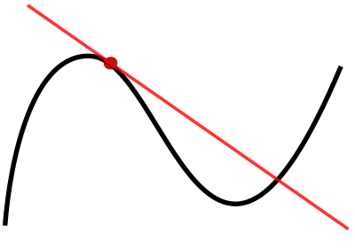
Dòng thời gian giải tích
Nguồn tổng quan: MacTutor — The rise of calculus.
Archimedes và phương pháp vét cạn
Phạm vi công cộng, Wikimedia Commons
Archimedes sử dụng phương pháp vét cạn để tính diện tích và thể tích, một tiền thân quan trọng của tư tưởng tích phân.
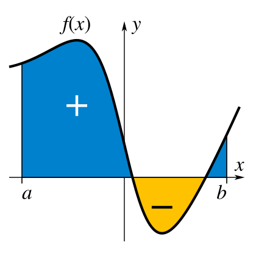
Nguồn: MacTutor — Archimedes · The Archimedes Palimpsest Project.
Newton và Leibniz
Phạm vi công cộng, Wikimedia Commons
Phạm vi công cộng, Wikimedia Commons
Isaac Newton và Gottfried Wilhelm Leibniz độc lập phát triển giải tích vi phân và tích phân.
Hai ký hiệu trên gắn liền với truyền thống ký hiệu của Leibniz, vẫn dùng đến ngày nay.
Nguồn: MacTutor — Newton · MacTutor — Leibniz.
Euler và Lagrange

Phạm vi công cộng, Wikimedia Commons
Phạm vi công cộng, Wikimedia Commons
Phát triển mạnh các phương pháp giải tích, phương trình vi phân và giải tích biến phân.
Nguồn: MacTutor — Euler · MacTutor — Lagrange.
Cauchy và Weierstrass: nền tảng chặt chẽ
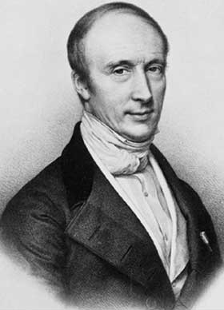
Phạm vi công cộng, Wikimedia Commons
Phạm vi công cộng, Wikimedia Commons
Đặt nền tảng chặt chẽ hơn cho giới hạn, tính liên tục và đạo hàm.
Định nghĩa \(\varepsilon\)–\(\delta\): \(f(x)\) gần \(L\) tùy ý khi \(x\) đủ gần \(a\). Đây là dạng chặt chẽ của giới hạn trong định nghĩa đạo hàm.
Nguồn: MacTutor — Cauchy · MacTutor — Weierstrass.
Giải tích nhiều biến và học sâu
Đạo hàm riêng, chain rule và gradient trở thành nền tảng của backpropagation và huấn luyện mạng neural network.
Chain rule nhân các đạo hàm dọc theo đường đi ngược từ mất mát về tham số. Gradient gom mọi đạo hàm riêng thành một vector chỉ hướng tăng nhanh nhất của \(L\).
Nguồn: Rumelhart, Hinton & Williams, 1986, Nature · Goodfellow et al., Deep Learning, chương 6.
Các nhân vật nổi bật
Phạm vi công cộng, Wikimedia Commons
Phạm vi công cộng, Wikimedia Commons
Phạm vi công cộng, Wikimedia Commons
Phạm vi công cộng, Wikimedia Commons
Nguồn: MacTutor — The rise of calculus.
Ứng dụng 1. Đạo hàm: AI biết cần sửa sai thế nào
Mô hình có một tham số \(w\), hàm lỗi:
Cần tìm \(w\) để lỗi nhỏ nhất. Đạo hàm:
Nếu \(w=5\) thì \(\dfrac{dL}{dw}=4\).
Cập nhật tham số bằng Gradient Descent
\(\eta\) là learning rate – tốc độ học. Với \(\eta=0{,}1\) và \(w=5\):
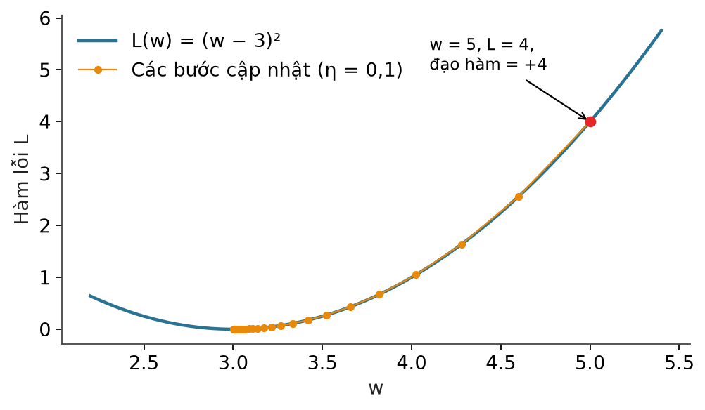
Nguồn: Lemaréchal, Cauchy and the Gradient Method, Documenta Mathematica, 2012.
Mã Python: Gradient Descent từ đầu
w = 5.0
learning_rate = 0.1
for i in range(30):
loss = (w - 3) ** 2
gradient = 2 * (w - 3)
w = w - learning_rate * gradient
print(i, round(w, 5), round(loss, 5))
print("Nghiệm gần tối ưu:", w)
0 4.6 4.0 1 4.28 2.56 2 4.024 1.6384 3 3.8192 1.04858 4 3.65536 0.67109 5 3.52429 0.4295 6 3.41943 0.27488 … 29 3.00248 1e-05 Nghiệm gần tối ưu: 3.002475880078571
Ứng dụng 2. Tích phân: tổng lượng biến thiên
Một cửa hàng có tốc độ bán hàng \(v(t)\) thay đổi theo thời gian. Tổng lượng hàng bán ra từ \(t_0\) đến \(t_1\):
Nếu \(v(t)=2t+1\), trong 3 giờ đầu:
Tổng lượng bán là 12 đơn vị, nếu tốc độ tính theo đơn vị hàng/giờ.
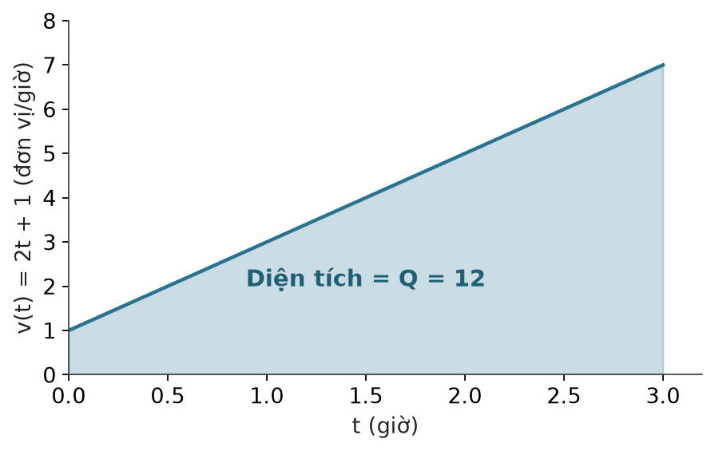
Mã Python: tích phân số bằng SciPy
from scipy.integrate import quad
def sales_rate(t):
return 2 * t + 1
total, error = quad(sales_rate, 0, 3)
print("Tổng lượng hàng bán:", total)
print("Sai số ước lượng:", error)
Tổng lượng hàng bán: 12.0 Sai số ước lượng: 1.3322676295501878e-13
Nguồn: SciPy — scipy.integrate.quad.
Liên hệ ngành: giải tích
5.
Tối ưu hóa
Mathematical Optimization
Vì sao cần tối ưu hóa?
Quản lý một nhà máy. Cần biết nên sản xuất bao nhiêu sản phẩm A và B để lợi nhuận cao nhất.
| Sản phẩm | Thời gian sản xuất | Lợi nhuận mỗi sản phẩm |
|---|---|---|
| A | 2 giờ | 100.000 đồng |
| B | 1 giờ | 60.000 đồng |
| Nhà máy chỉ có 100 giờ làm việc. | ||
Dòng thời gian tối ưu hóa
Nguồn tổng quan: INFORMS — History of O.R. Excellence · Boyd & Vandenberghe, Convex Optimization.
Euler, Lagrange và tối ưu có ràng buộc
Phạm vi công cộng, Wikimedia Commons
Phát triển giải tích biến phân và phương pháp nhân tử Lagrange để giải các bài toán tối ưu có ràng buộc.
\(f\): hàm cần tối thiểu. \(g(x)=0\): ràng buộc. \(\lambda\): nhân tử Lagrange. Nghiệm tối ưu là điểm dừng của \(\mathcal{L}\).
Nguồn: MacTutor — Lagrange · Boyd & Vandenberghe, Convex Optimization, chương 5.
Cauchy và phương pháp giảm dốc
Phạm vi công cộng, Wikimedia Commons
Cauchy đề xuất phương pháp steepest descent, tiền thân của Gradient Descent.
Đi ngược hướng gradient, vì đó là hướng giảm nhanh nhất cục bộ của \(f\).
Simplex Method và quy hoạch tuyến tính
Phạm vi công cộng, Wikimedia Commons
George Dantzig phát triển thuật toán Simplex cho quy hoạch tuyến tính.
Nghiệm tối ưu của quy hoạch tuyến tính nằm ở một đỉnh của miền khả thi. Simplex đi dọc các cạnh từ đỉnh này sang đỉnh khác.
Nguồn: INFORMS — George B. Dantzig · Dantzig, 1982, Reminiscences about the origins of linear programming.
Quy hoạch toán học và tối ưu hiện đại
Hugo van Gelderen / Anefo, CC BY-SA 3.0 nl, Wikimedia Commons
Dynamic Programming, stochastic approximation, phương pháp điểm trong và các phương pháp tối ưu phi tuyến phát triển mạnh.
| Mốc | Công trình |
|---|---|
| 1951 | Robbins và Monro: stochastic approximation, nền của SGD |
| 1957 | Bellman: Dynamic Programming |
| 1984 | Karmarkar: phương pháp điểm trong cho quy hoạch tuyến tính |
Nguồn: Robbins & Monro, 1951 · Bellman, 1957 · Karmarkar, 1984.
Adam Optimizer
Kingma và Ba công bố Adam, một thuật toán tối ưu được sử dụng rộng rãi trong Deep Learning.
| \(g_t\) | Gradient của hàm mất mát tại bước \(t\) |
| \(m_t,v_t\) | Trung bình động bậc một (động lượng) và bậc hai của gradient |
| \(\hat m_t,\hat v_t\) | Hai đại lượng trên sau hiệu chỉnh lệch |
| \(\beta_1,\beta_2,\varepsilon\) | Siêu tham số, mặc định trong bài báo: 0,9; 0,999; \(10^{-8}\) |
Nguồn: Kingma & Ba, Adam: A Method for Stochastic Optimization, arXiv, 2014; ICLR 2015. Chưa tìm được ảnh chân dung có giấy phép mở.
Những nhân vật tiêu biểu
Phạm vi công cộng, Wikimedia Commons
Phạm vi công cộng, Wikimedia Commons
Phạm vi công cộng, Wikimedia Commons
Hugo van Gelderen / Anefo, CC BY-SA 3.0 nl, Wikimedia Commons
Nguồn: MacTutor — Lagrange · INFORMS — Dantzig · Stephen Boyd, Stanford.
Ứng dụng 1. Tối đa hóa lợi nhuận nhà máy
| \(x\) | Số sản phẩm A |
| \(y\) | Số sản phẩm B |
Hàm mục tiêu (đơn vị nghìn đồng):
Ràng buộc thời gian, ràng buộc nguyên liệu, và điều kiện không âm:
Miền khả thi và nghiệm tối ưu
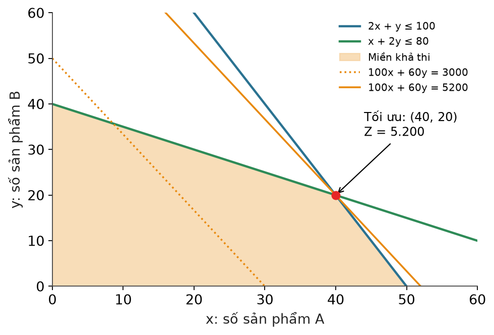
| Đỉnh \((x,y)\) | \(Z\) |
|---|---|
| (0, 0) | 0 |
| (50, 0) | 5.000 |
| (0, 40) | 2.400 |
| (40, 20) | 5.200 |
Đỉnh \((40,20)\) là giao của \(2x+y=100\) và \(x+2y=80\). Lợi nhuận tối đa \(Z=100\cdot40+60\cdot20=5.200\) nghìn đồng.
Mã Python: linprog
from scipy.optimize import linprog
# scipy tìm MIN, nên đổi dấu để tìm MAX
c = [-100, -60]
A = [
[2, 1],
[1, 2]
]
b = [100, 80]
result = linprog(
c,
A_ub=A,
b_ub=b,
bounds=[(0, None), (0, None)],
method="highs"
)
print("Số sản phẩm A:", result.x[0])
print("Số sản phẩm B:", result.x[1])
print("Lợi nhuận tối đa:", -result.fun, "nghìn đồng")
Số sản phẩm A: 40.0 Số sản phẩm B: 20.0 Lợi nhuận tối đa: 5200.0 nghìn đồng
Nguồn: SciPy — scipy.optimize.linprog.
Ứng dụng 2. Tìm bộ tham số tốt nhất cho AI
Một mô hình Machine Learning có thể có hàng triệu tham số. Cần tìm:
| \(\theta\) | Toàn bộ tham số của mô hình |
| \(L(\theta)\) | Hàm mất mát |
| \(\theta^{*}\) | Bộ tham số làm mất mát nhỏ nhất |
Một thuật toán phổ biến là Gradient Descent:
Gradient Descent trên hàm hai tham số
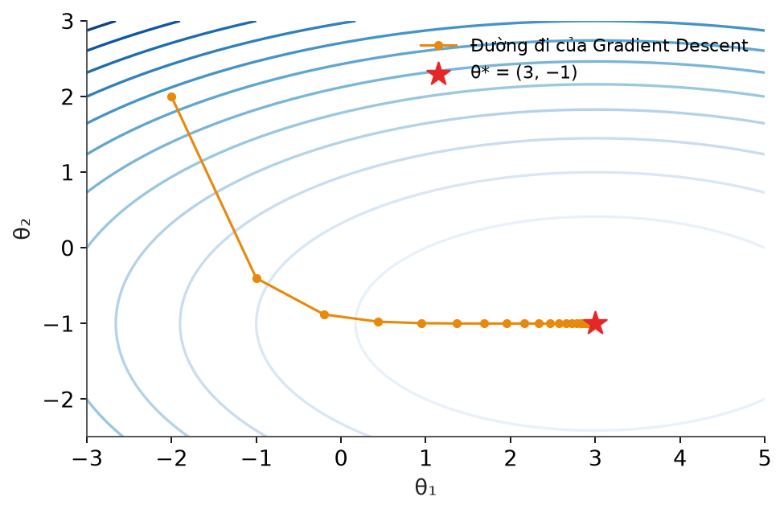
- Mỗi bước đi ngược gradient, vuông góc với đường đồng mức.
- Hướng \(\theta_2\) dốc hơn nên các bước dọc hướng đó ban đầu dài hơn.
- Mô hình thật có hàng triệu chiều, nhưng quy tắc cập nhật giữ nguyên.
Mã Python: SGD với scikit-learn
from sklearn.datasets import make_regression
from sklearn.linear_model import SGDRegressor
from sklearn.model_selection import train_test_split
from sklearn.metrics import mean_squared_error
X, y = make_regression(
n_samples=1000,
n_features=5,
noise=15,
random_state=42
)
X_train, X_test, y_train, y_test = train_test_split(
X, y, test_size=0.2, random_state=42
)
model = SGDRegressor(
max_iter=2000,
learning_rate="invscaling",
eta0=0.01,
random_state=42
)
model.fit(X_train, y_train)
pred = model.predict(X_test)
print("MSE:", mean_squared_error(y_test, pred))
print("Parameters:", model.coef_)
MSE: 249.5834643524079 Parameters: [27.48905751 45.86787596 16.6407073 24.45373453 19.2849535 ]
Nguồn: scikit-learn — SGDRegressor.
Liên hệ ngành: tối ưu hóa
Tổng kết buổi 3
- Bản đồ: tám nhánh toán, mỗi nhánh giải một loại vấn đề; các nhánh phối hợp trong cùng một thuật toán.
- Xác suất và thống kê: Bayes cập nhật xác suất 20% lên 53,33%; Naive Bayes dự đoán khách mới mua với xác suất 54,24%; A/B testing cho p-value 0,488, chưa đủ bằng chứng.
- Đại số tuyến tính: khách hàng là vector, bảng là ma trận; PCA giảm chiều, cosine đo tương đồng.
- Giải tích: đạo hàm chỉ hướng sửa sai, Gradient Descent cập nhật tham số; tích phân cộng dồn biến thiên.
- Tối ưu hóa: linprog cho 40 sản phẩm A, 20 sản phẩm B, lợi nhuận 5.200 nghìn đồng.
Học liệu tham khảo
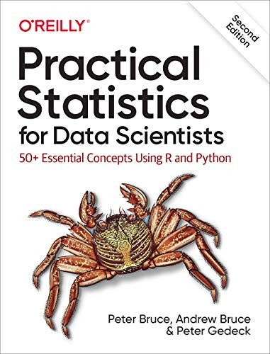
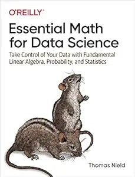
Nguồn: O’Reilly — Practical Statistics for Data Scientists · mã nguồn đi kèm (GitHub) · O’Reilly — Essential Math for Data Science. Ảnh bìa dùng với mục đích giới thiệu học liệu.
Việc trước buổi sau
- Chạy lại các đoạn mã của bài 3 trong một môi trường ảo. Đối chiếu từng số in ra với số trên slide.
- Đổi cỡ mẫu A/B thành 5.000 người mỗi nhóm (cùng 5% và 6%). Dự đoán p-value tăng hay giảm, rồi chạy kiểm chứng.
- Đổi learning rate Gradient Descent thành 1,1 rồi 0,01. Ghi nhận \(w\) sau 30 bước và giải thích vì sao.